This one has a bit of a backstory. The Pumpkin people were donated to the City
of Ashland by Peggy Yoder. She was inspired to create them during a vacation
to the Smoky mountains and as a way to spruce up the city for the Autumn
season. When she was in Gatlinburg she saw similar pumpkin people along the
street while on her way to breakfast, and fell in love with them. When she
returned home she wanted to bring them to Ashland as a way to give back and
to do something for the children in the community. She reached out to the
city about the idea and they loved it. Peggy worked with Brainchild Creative
to design the pumpkin people and the cost per statue ranged from $2,220 to
$3,200. They arrived at the start of September and will stay till mid to end
November. There are 10 of them along Main Street so be sure to find them
all before they leave for the winter!!!
Sources:
WMFD - The Ashland Angle: Peggy's Pumpkin People
Ashland Collegian - Peggy’s Pumpkin People: What’s their story?
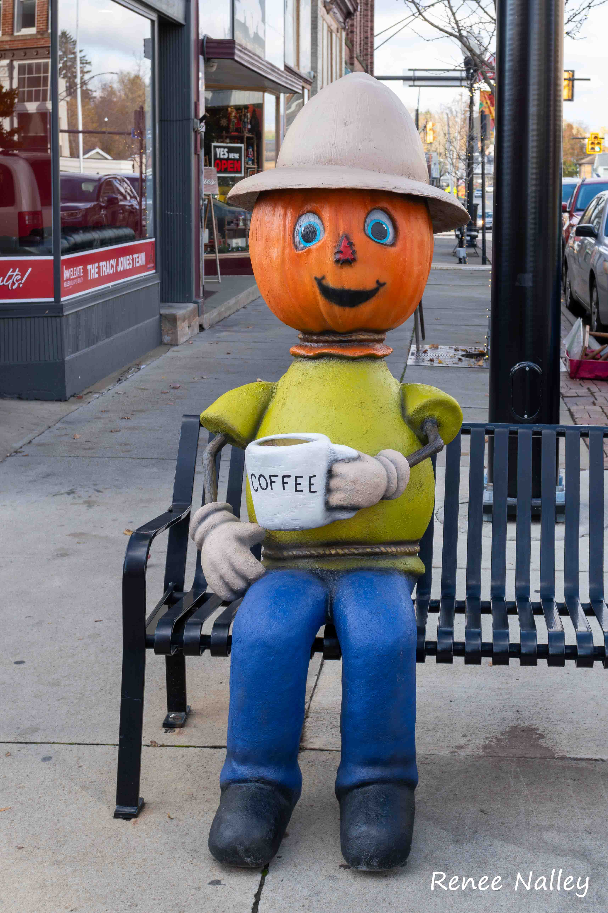
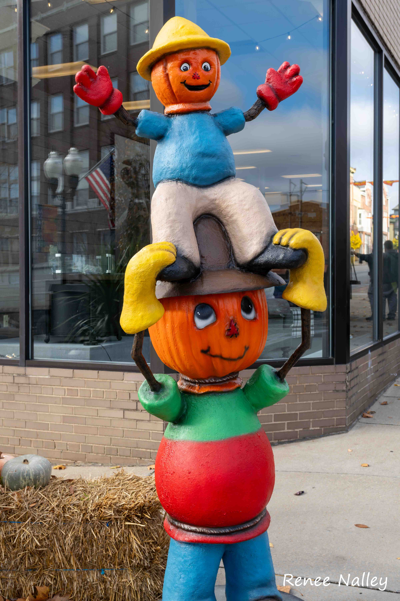
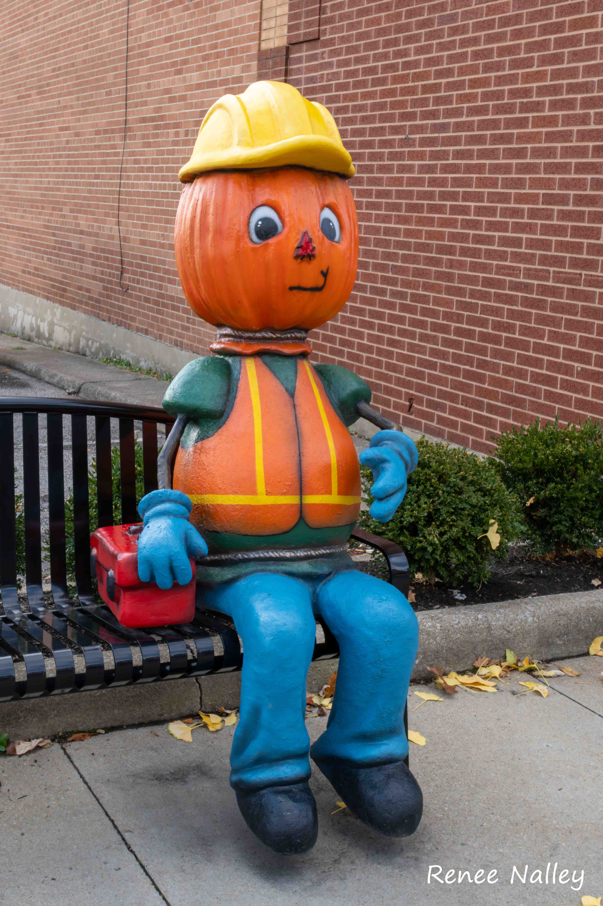
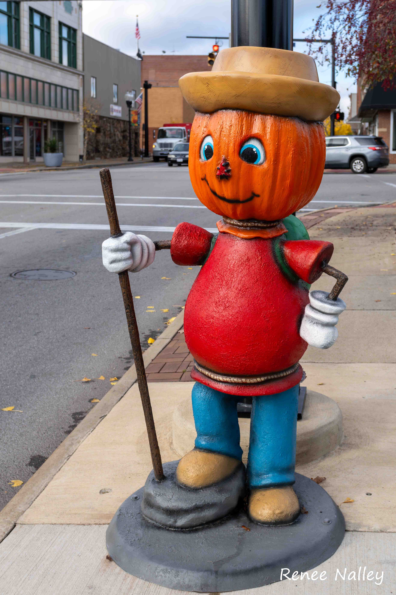
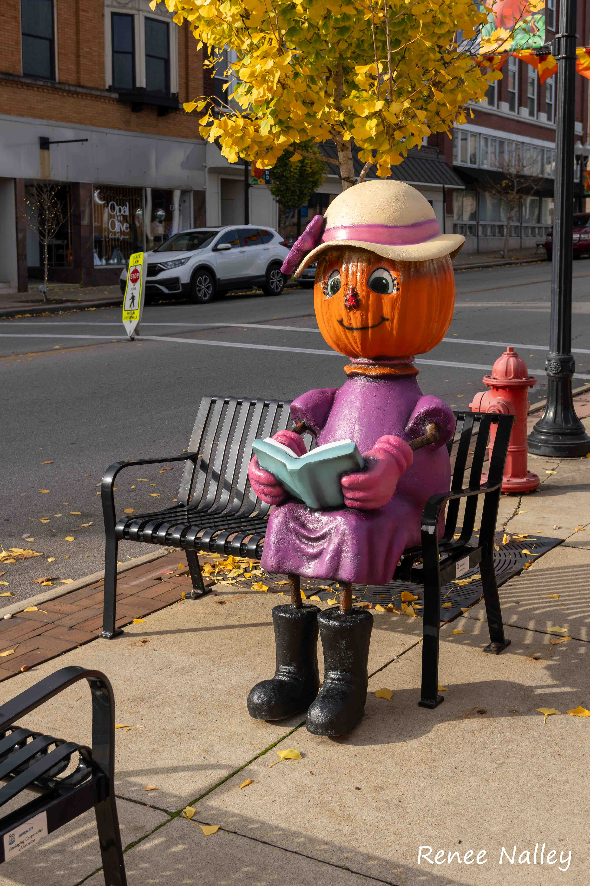
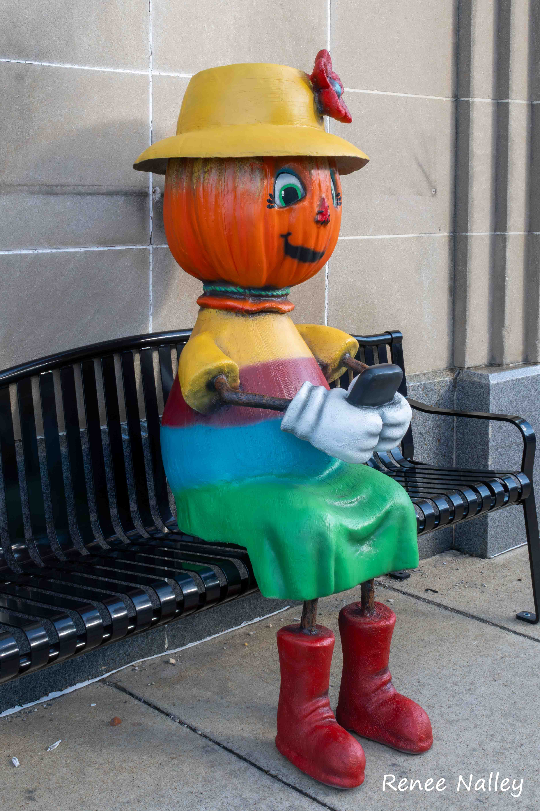
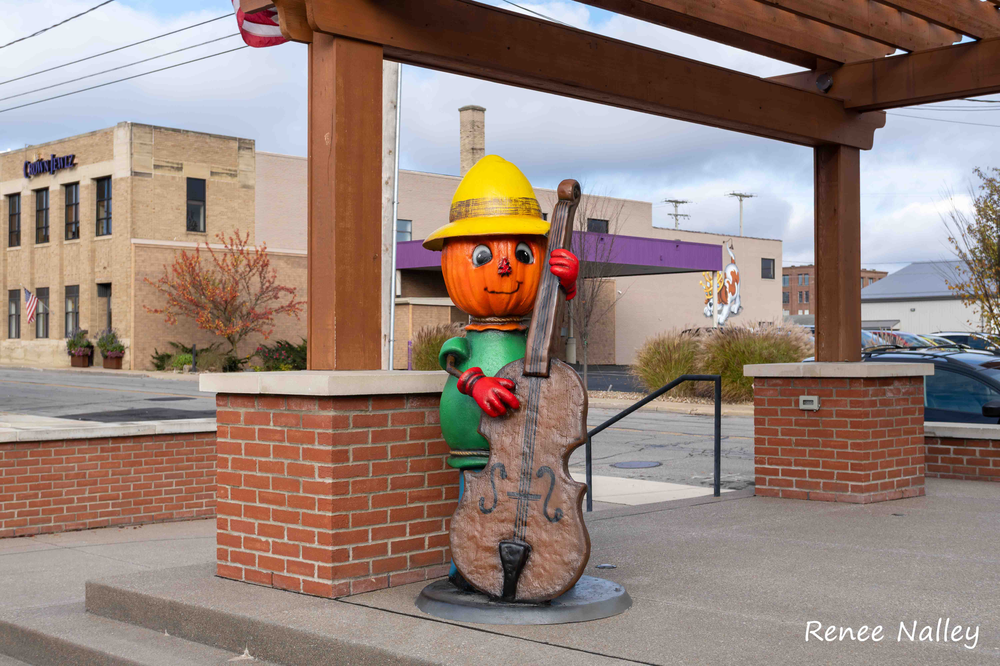
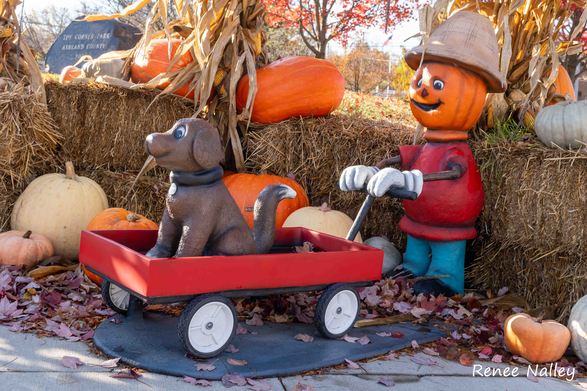
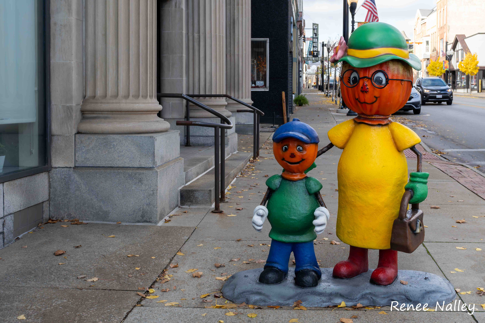
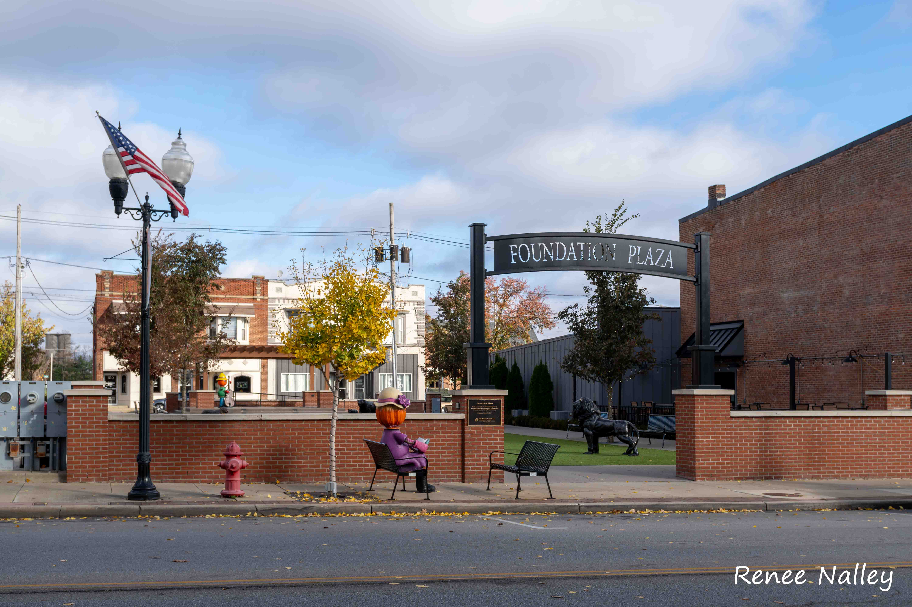
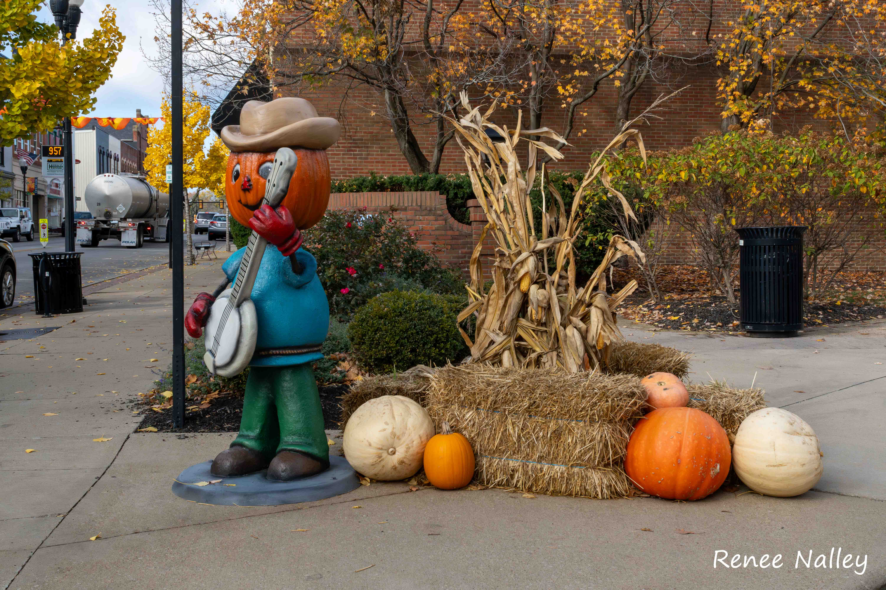